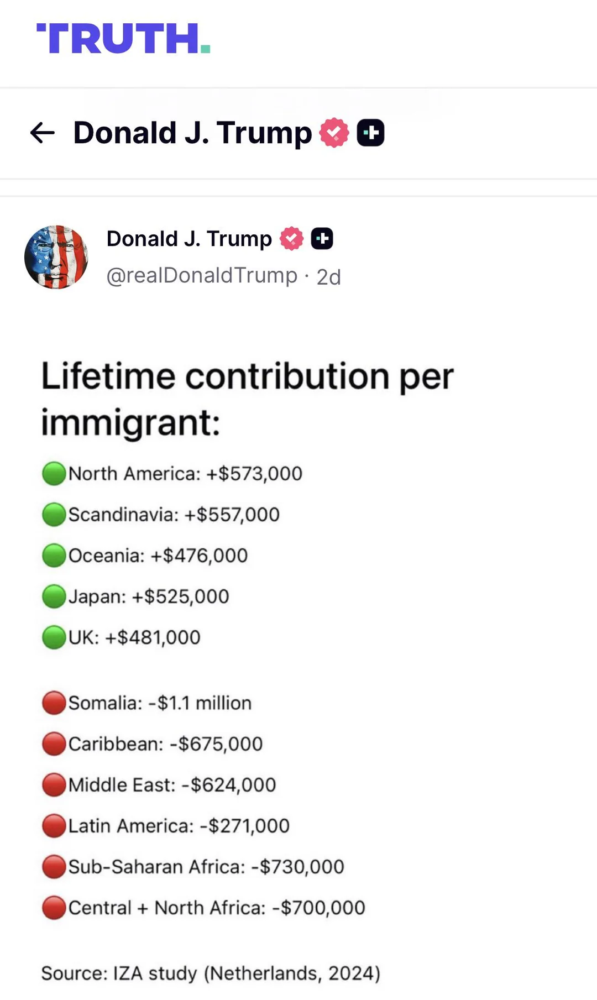

Project 2: Fixing a Problematic Visualization
For this assignment, I chose to work on fixing a visualization created by President Donald J. Trump.
Issues with the original:
- It is portrayed as representing the U.S. when it actually refers to the Netherlands.
- The values used in Trump's version are entirely made up. There is no matching data in the source.
- Trump sorts entries by the length of a country's name rather than anything significant.
- The source is badly cited.
- It's just a tweet.
How did I go about fixing it:
Firstly, I had to track down the original dataset since it was incredibly badly cited. I read through the entire research paper because a simple ctrl+f couldn't find any of the numbers that he had used in his display, and I realized that every value was made up. As such, I essentially had to go about this by re-designing it from the ground-up with the real data.
While reading the article, it did not take long at all to realize that the purpose of this research was not simply to see societal contribution by country of origin, but also by mean of entry (for example, asylum vs. typical immigration) or by age at which an individual immigrated. The article actually emphasized these as well, having very few numbers regarding societal contribution by country of origin while entire tables were made for the other modes tracked.
In the end, I settled on building a data visualization merging the region of origin measure and the age of entry measure. I wasn't sure what sort of visualization would work well since there are 3 different axis's (region of origin (nominal), age of origin (nominal), and value (quantitative)), but eventually settled on a grouped bar chart. Groups are made by age group, and then region determines placement inside the group.
What did my visualization improve:
- The values used are now real.
- It does not mis-contextualize the original source.
- It is sorted logically.
- It's an actual chart!
Link to original data visualization.
Link to original paper.
Charts
